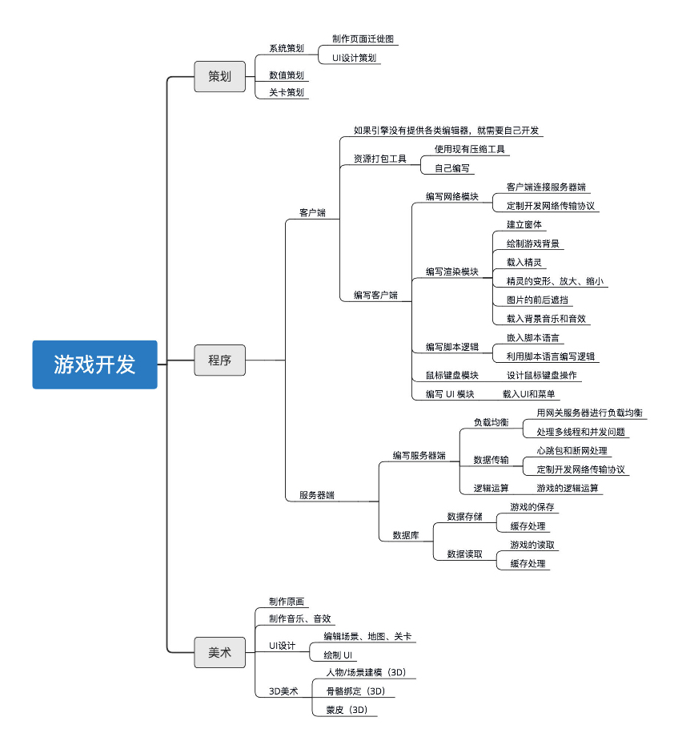

- 00 开篇词 跟我学，你也可以开发一款游戏！.md
- 复习课 带你梳理客户端开发的三个重点.md
- 第10讲 如何载入“飞机”和“敌人”？.md
- 第11讲 如何设置图像的前后遮挡？.md
- 第12讲 如何设置精灵的变形、放大和缩小？.md
- 第13讲 如何设置淡入淡出和碰撞检测？.md
- 第14讲 如何制作游戏资源包和保存机制？.md
- 第15讲 如何载入背景音乐和音效？.md
- 第16讲 如何在游戏中载入UI和菜单？.md
- 第17讲 如何用鼠标和键盘来操作游戏？.md
- 第18讲 如何判断客户端的网络连接？.md
- 第19讲 如何嵌入脚本语言？.md
- 第1讲 游戏开发需要了解哪些背景知识？.md
- 第20讲 脚本语言在游戏开发中有哪些应用？.md
- 第21讲 如何使用脚本语言编写周边工具？.md
- 第22讲 如何选择合适的开发语言？.md
- 第23讲 如何定制合适的开发协议？.md
- 第24讲 不可忽视的多线程及并发问题.md
- 第25讲 如何判断心跳包是否离线？.md
- 第26讲 如何用网关服务器进行负载均衡？.md
- 第27讲 如何制作游戏内容保存和缓存处理？.md
- 第28讲 热点剖析（一）：HTML5技术是如何取代Flash的？.md
- 第29讲 热点剖析（二）：如何选择一款HTML5引擎？.md
- 第2讲 2D游戏和3D游戏有什么区别？.md
- 第30讲 热点剖析（三）：试试看，你也可以编写一款HTML5小游戏！.md
- 第31讲 热点剖析（四）：安卓端和苹果端游戏开发有什么区别？.md
- 第32讲 热点剖析（五）：如何选择移动端的游戏引擎？.md
- 第33讲 热点剖析（六）：AR和人工智能在游戏领域有哪些应用？.md
- 第34讲 热点剖析（七）：谈谈微信小游戏的成功点.md
- 第35讲 热点剖析（八）：谈谈移动游戏的未来发展.md
- 第36讲 热点剖析（九）：谈谈独立开发者的未来发展.md
- 第3讲 游戏的发动机：游戏引擎.md
- 第4讲 底层绘图接口的妙用.md
- 第5讲 构建游戏场景的武器：地图编辑器.md
- 第6讲 从0开始整理开发流程.md
- 第7讲 如何建立一个Windows窗体？.md
- 第8讲 如何区分图形和图像？.md
- 第9讲 如何绘制游戏背景？.md
- 结束语 做游戏的过程就像是在雕琢一件艺术品.md
- 课后阅读 游戏开发工程师学习路径（上）.md
- 课后阅读 游戏开发工程师学习路径（下）.md
复习课 带你梳理客户端开发的三个重点
我们用了将近两个月的时间，讲述了游戏客户端的开发流程和代码编写，今天我来带你总结并且回顾一下。
我这里列了一些编写游戏客户端你必须要掌握的知识和注意的事项。希望通过梳理这些知识，能让你对学过的内容有一个全盘的认识和更加深入的理解。
重点一：客户端开发中4个重要方法
首先，我们来看，设置前后遮挡效果时要用到的一个虚拟概念，Z值。 2D游戏中其实是不存在这个概念的，因为Z值是高度概念，一般只存在于3D游戏当中。2D游戏的坐标轴，拥有X和Y两种位置。X轴是横向坐标，Y轴是纵向坐标。在斜45度角的游戏，或者需要经常改变前后遮挡位置游戏中，往往才需要加入这个概念。在2D开发中，用好了Z值，能够帮你计算2D游戏中图片的前后位置，在游戏中设置前后遮挡效果的时候就会更加方便。
其次，在2D游戏中制作碰撞检测的时候，可以使用图片相交检测的方法，来替代物理引擎。像打飞机游戏这样非常简单的2D游戏，是完全不需要使用物理引擎的，我们使用图片相交检测的方法，直接写对应的代码就可以。
什么时候才要使用物理引擎呢？这取决于你的代码量和程序编写的复杂程度。
如果碰撞代码非常复杂，占据整个工程量的1/5~1/4，那就可以直接使用物理引擎；如果仅仅用一两个函数就可以搞定，那就可以自己模拟物理碰撞效果来写相应的代码。毕竟2D游戏不比3D游戏，对“拟真”的要求没有那么高。而图片相交检测这样的方法易于编写，且效果也可以满足需求。当然，3D游戏中，往往需要高精度地模拟真实世界的碰撞，这个时候就直接使用物理引擎就好了。
再次，在游戏开发中，保持低耦合度，能够提高你的开发效率，减少你的工作量。 如果一款游戏引擎没有提供UI模块的话，那需要你编写一套UI模块或者UI库。所谓单独的UI模块，指的是仍然使用游戏引擎作为基础编写代码，但是却独立于游戏本身的逻辑之外，将之抽象出UI模块和UI库。如果UI模块直接融合在游戏里，虽然玩家看起来是一样的效果，但是在代码层面，耦合度却更高，可复用性和可修改性就变得更低，代码质量就更差。
同样，在游戏开发中，很多模块都可以提取出来。比如鼠标和键盘的检测，单独提取出来做，变成相应的模块和库；很多的内容都可以进行抽象和独立，有了抽象和独立的模块，这样可以保证游戏版本的迭代不出现问题，你甚至可以拿这一套独立的抽象模块（比如UI模块、鼠标键盘模块等等），继续来做第二款游戏，因为里面很多代码都可以复用。
低耦合度，是游戏开发，甚至编程中都非常重要的思想。我这里推荐一本书《设计模式》。这里面对于耦合度的几种模式有详细的讲解。比如工厂模式、代理模式等等，但是不管用什么模式，低耦合度始终是编程中追求的一种代码方式。
所谓低耦合度，简单理解，就是将功能抽象出来，并且写成一组函数或者类（我们简称为接口）。这些接口有传入传出的参数或者返回值，可以通过外界代码传给接口，接口通过计算，将计算后的结果返回给外部代码。这些接口和别的功能关联性不大，替换了接口，就仅仅替换了算法或者内部实现而已，但是核心功能是一样的。
最后，我想来说一下游戏逻辑。将游戏逻辑放在脚本语言里去写，迭代版本的时候可以不更新主程序，只更新脚本。（如果不放在脚本语言里，就直接写在硬代码里面。）我们在使用引擎和原生语言开发游戏的时候，只保持核心内容，其他游戏逻辑、游戏配置，特别是在游戏中可活动、可配置、可调节的部分，都提取出来，放到脚本语言里去编写。
所谓的主程序，在Windows下就是EXE文件，一般情况下，更新EXE执行文件会导致一系列的更新，比如DLL动态链接库或者某些资源也会更新，所以更新资源包会变得很大。如果纯粹更新脚本文件，那就是几个脚本程序而已。当然这个也要看具体的需求，并不是说一定不更新主程序，如果有迫切需求更新主程序，也是必须要更新的。
除此之外，关于客户端其他部分的流程和要注意的细节，我放在一起梳理一下。如果有哪些还不是很清楚，你可以回到对应的文章去复习一下。
首先，一款成熟的引擎会包含各种编辑器和工具。如果游戏引擎没有提供相应工具，你就必须根据要做的游戏项目，编写方便策划和美术使用的编辑器，包括地图编辑器、关卡编辑器、场景编辑器等等。
游戏的网络部分，要尽量保持网络连接和数据传输的安全性，游戏的网络协议可以迭代更新，网络传输的内容和逻辑也可以放在游戏脚本里面去做。
游戏的音乐部分，如果引擎不提供，建议使用成熟的音乐库。游戏要合理使用多线程技术，才能保证流畅性。游戏资源打包的包裹格式，如果没有现成的方案，可以使用压缩包的开发库编写，成熟稳定可靠。
每个平台的游戏机制都不相同，比如在HTML5游戏里面，它使用的是事件机制，并非普通的循环。
重点二：游戏开发的3大模块
这里我按照游戏开发中的三大模块策划、程序、美术，画了一个图。

开发游戏的时候，策划要先行，先出策划稿、UI图、页面迁徙图等等，然后美术开始跟上，紧接着根据策划案开始制作UI、原画、人物、场景等等。程序员开始制作各种编辑器和周边工具（如果引擎没有提供的话），随后美术开始制作地图和各种关卡，程序员开始编写demo。随后就开始内部测试和运行，总结问题和经验，修正和补缺。最后，开始第一个正式版本的开发。正式版本的开发流程和demo版本是一样的，我在[第5讲]的时候已经详细说过demo的作用。
在专栏中，我用Pygame来做教学示例，有很多人在留言里问，我想用别的语言编写游戏难道不可以吗？当然是可以的，Pygame只是利用Python+SDL封装的游戏库，而我只是以Pygame为载体，告诉你编写2D游戏引擎的一些核心知识是怎样的。有了核心知识，了解了流程，语言层面就简单地多了。举一反三，换作任何语言、任何引擎都不会有问题了。
在这之后，如果你想要进一步学习，或者从事相关的开发工作，你要自己多练习、多思考。如果是在公司里，那就多上手去做项目。游戏的开发流程就是这么回事，要做的东西也就那么多，但是不同的项目，不同种类的游戏，就会有不同的问题出现。每次遇到问题，多换几种思路去思考，多去了解策划、运营的想法，而不要只是在“不断填坑”。
重点三：如何写出过硬的代码？
其实，说了这么多，我现在要说我认为最重要的一点。 无论你是做游戏开发或者别的开发，你都要有过硬的代码基础。 一款游戏，有再好的引擎，再好的策划，如果代码写得不好，也会影响游戏体验，毕竟引擎只是在底层带动游戏的运行，在上层业务上，还是要依赖代码的牢靠和稳固。
我从96年写下第一行代码开始，走过许多的弯路，也经历过许多挫折。在写代码方面，我或许可以带给你一些直接的经验和警示之谈。
十几年前，当我刚还是个入门级程序员的时候，经历过一个项目，我负责做一个共享内存的接口。事实上写这个接口很简单，用不了多少代码就能完成，但当时我正在学习C++最新的Loki库（后来加入了Boost），觉得里面的模板技巧简直是无敌，所以我在共享内存接口之上又封装了类似Loki模板的方法，最终导致代码过于复杂，很难控制和管理，项目失败。
因此，如果代码不是特别复杂，你大可以直接写功能，不需要从类、框架开始写起，因为这会造成我所犯的那个错误，就是“过度设计”。举个简单的例子，如果一个“hello word”，却有500行代码，这很明显就是“过度设计”。
所以，我的多年的习惯是，如果一个正常的软件、游戏，或者模块、接口，我都会将普通的功能、重复性高的功能，抽象出来，做成一个模块，特殊的功能、无法重复的，再做成一个模块。代码尽可能不要长，长的代码分割成几部分，放在几个文件里，阅读起来也会很清晰。能写简洁的绝对不要花里胡哨，能用正常技巧的绝对不用小聪明，实在没办法才用小聪明。
对外提供接口要清晰、易于阅读，逻辑要一条一条理顺。有异常，就写异常处理代码；有错误，就处理错误代码；没有问题，再运行下一条。
好记性不如烂笔头，写之前先想明白思路，将自己即将要写的代码在脑子里跑一遍，然后将思路记录下来，记在笔记本、电脑、手机哪里都可以。这样写出的代码比直接上手写，速度上会慢很多，但是出错概率极低。直接写你可能一下子就写完，但还要修修补补，调试一整天，事实上，这比思考虑好了再写还要慢。
最后，还是那句话，不管是编写大型游戏还是一款小游戏，还是做任何项目，都离不开踏踏实实把代码写好。毕竟这是基础。如果你总想着什么多少天速成法，快速入门、快速编写出一款脍炙人口的游戏，用户上几百万，这是不存在的。游戏开发，应该说任何程序开发，都不适合任何想要走捷径的人。真正聪明的人，都应该知道学习本来也没有什么捷径。
经过这两个月的学习，不知道你对游戏开发有没有更深入的认识？关于游戏开发或者编程，你还有什么想要了解的，你可以继续在留言区写下想法。
我在后面的挑战中继续等待你的到来！
© 2019 - 2023 Liangliang Lee. Powered by gin and hexo-theme-book.